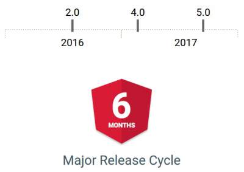

Oct 14, 2017
Key features include:
An emphasis on making it easier to build progressive web apps, so apps can be cached in the browser. The progressive web apps concept, the product of a joint effort between Google and Mozilla, is about enabling development of browser-based apps that offer a superior, native-like experience. Google is still building support for capability in the command-line interface (CLI).
A build optimizer that makes the application smaller by eliminating unnecessary code. (The build optimizer is a command-line tool.)
Making Material Design components compatible with server-side rendering. Google needs to fix a few bugs before releasing this functionality.
Angular Universal State Transfer API and DOM support, for sharing code between server- and client-side versions of an application.
The compiler has been improved to support incremental compilation. The compiler operates as a TypeScript transform, for faster rebuilds.
Pipes for internationalized number, date, and currency. This increases standardization across browsers and eliminates the need for i18n polyfills.
To remove more polyfills, the ReflectiveInjector has been replaced with the StaticInjector. As a result, application size is reduced for most developers.
Multiple names are supported for components and directives, which is useful in helping users migrate without breaking changes.
Angular 5 has an updated Httpclient.
CLI 1.5, which generates Angular 5 projects by default.
For Angular forms, developers can run validation and value updates on blur and submit rather than on every input event.
The RxJS reactive programming library has been updated to version 5.5.2 or later, featuring operators that eliminate the side effects of code-splitting and tree-shaking problems. Also, RxJS now distributes a version using ECMAScript modules, pulled in by default by the Angular CLI.
Router hooks have been added for tracking router cycles from the beginning of running guards until completion of activation.